трамвай на роботу
Сидять неглибоко, і вухо не втомлюється
Це напіввкладиші: без силіконових амбушюр, нічого не тисне навіть за годину дороги. Шумозаглушення приглушує гул салону, але оголошення зупинок ви почуєте. Для міста це скоріше плюс.
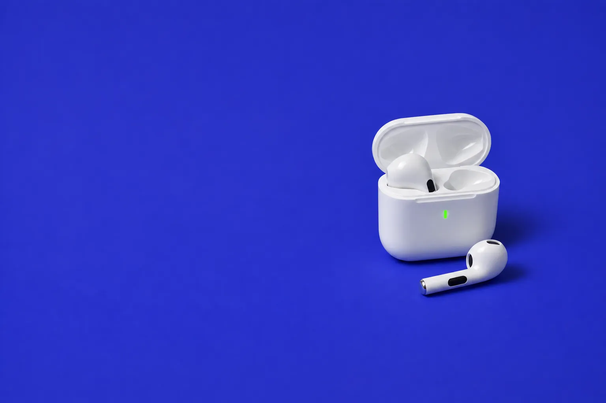
Бездротові навушники Air Pro 6
Відкрили кейс, і вони вже в телефоні. Bluetooth 5.3, iPhone чи Android, кейс підзаряджає їх ще чотири рази. Не преміум, зате й загубити не страшно.
Ціна для нових покупців AliExpress. Доставка в Україну безкоштовна, 7-20 днів.
Без фантазій про студійний звук: ось де бюджетні навушники справді виручають і що від них чекати.
трамвай на роботу
Це напіввкладиші: без силіконових амбушюр, нічого не тисне навіть за годину дороги. Шумозаглушення приглушує гул салону, але оголошення зупинок ви почуєте. Для міста це скоріше плюс.
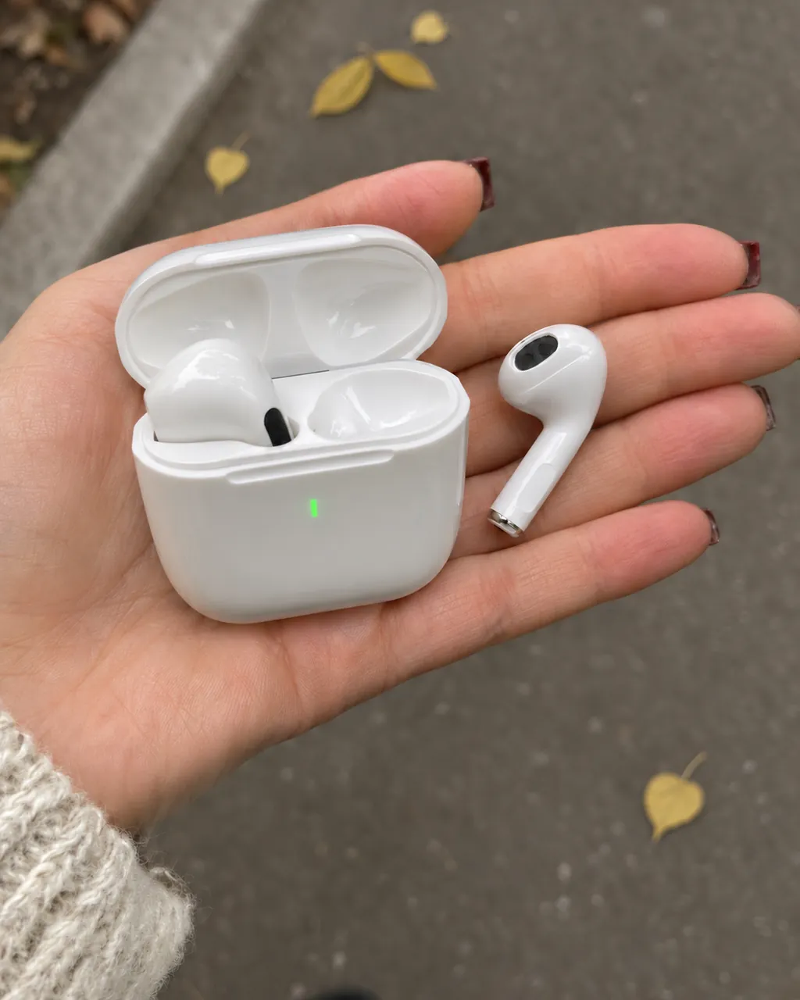
обід, телефон лишився на столі
Перший раз пару створюєте в налаштуваннях Bluetooth, далі навушники самі знаходять телефон, щойно відкриваєте кейс. Зв'язок тримають метрів на 10: можна відійти по каву, а телефон лишити на столі.
Кейс трохи більший за сірникову коробку, тож живе в кишені джинсів, а не на дні рюкзака.
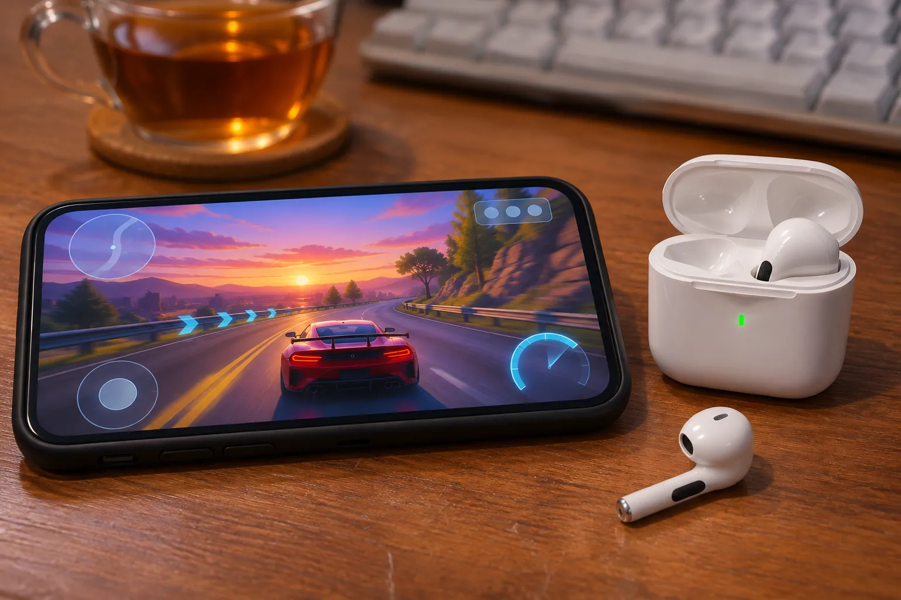
вечір, гра чи серіал
Продавець заявляє режим низької затримки, 60 мілісекунд. На практиці це означає, що постріл у грі чи репліка в серіалі звучать тоді, коли ви їх бачите, без ефекту поганого дубляжу.
Наостанок навушники в кейс: приблизно за годину вони знову заряджені.
Сенсор на верхній частині ніжки. Спробуйте: торкніться навушника на малюнку один, два чи три рази.
Сенсор не найчутливіший: кілька покупців пишуть, що подвійний дотик спрацьовує не з першого разу. Торкайтеся впевнено, кінчиком пальця.
Торкніться ніжки навушника
Кейс 55 × 48 мм, навушник 35 мм заввишки. На схемі все в одному масштабі з карткою, яка у вас у гаманці.
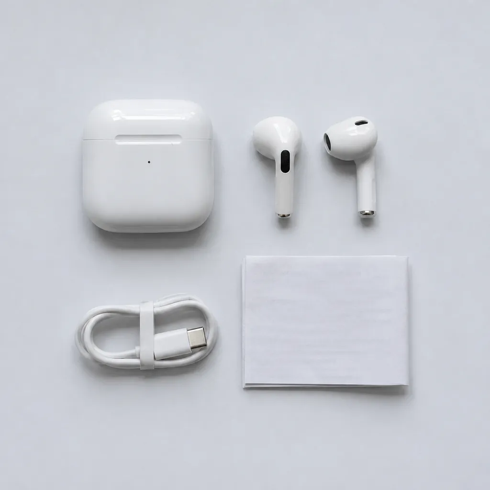
Навушники й кейс скрізь однакові, різниця лише в дрібниці, яку кладуть поруч. Якщо навушники часто випадають з вух, беріть комплект з ремінцем: навушник повисне на шиї, а не покотиться асфальтом.
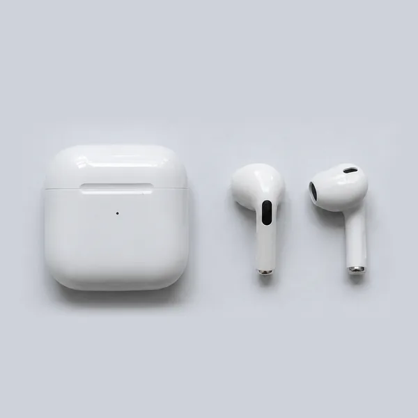
Тільки навушники, кейс і кабель
164,69 грн
Обрати A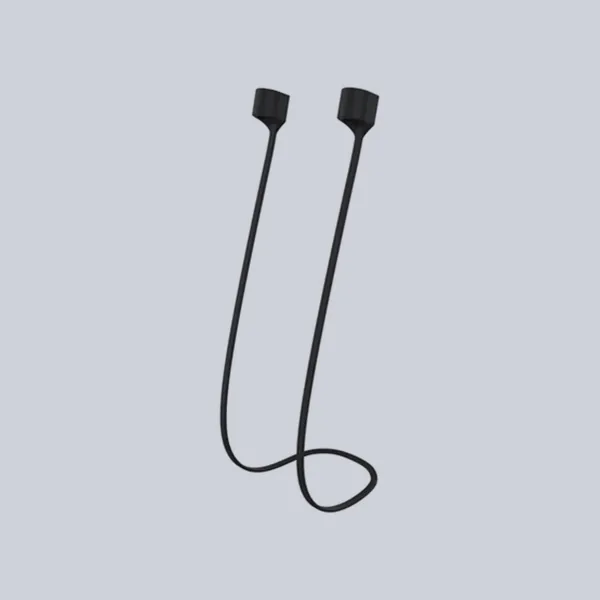
Силіконовий шнурок, що з'єднує навушники за шиєю
166,86 грн
Обрати з чорним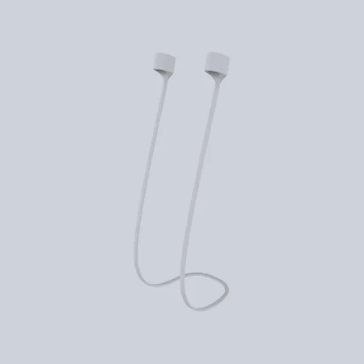
Той самий шнурок, тільки білий, під колір кейса
172,23 грн
Обрати з білим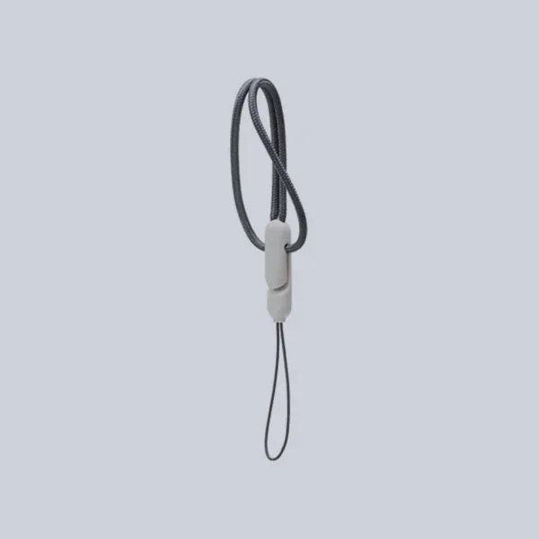
Сірий плетений шнурок-петля для чохла чи ключів
166,86 грн
Обрати BЦіни для нових покупців AliExpress на 7 листопада 2026 року, одна пара на акаунт. Кнопка відкриває сторінку товару з уже вибраним комплектом.
4,2з 5
Кожен десятий поставив одну зірку, найчастіше через мікрофон і батарею. Про це чесно в наступному розділі.
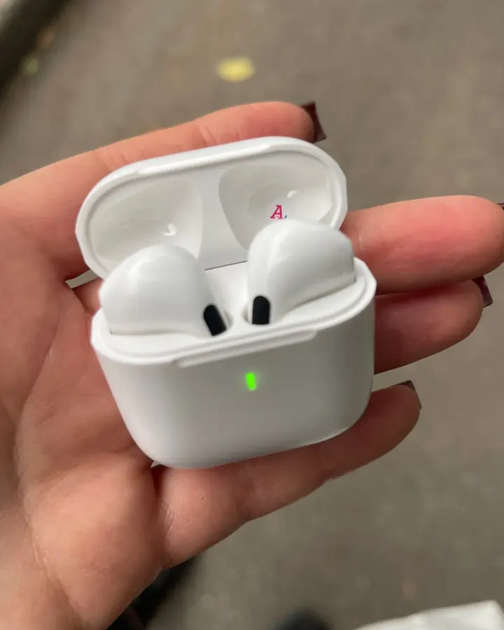
Звук нормальний, гучний, але не як у Apple, звісно. За таку ціну шикарно. Підключились одразу. Від пошти одразу почала слухати музику, жодних проблем.
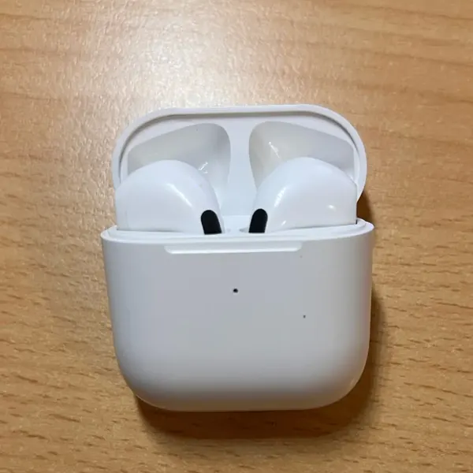
Мені дуже подобається, за такою ціною просто супер!
За 5 доларів ці навушники не мають права бути такими добрими. Звук чудовий, не зовсім як в оригіналу, але дуже близько.
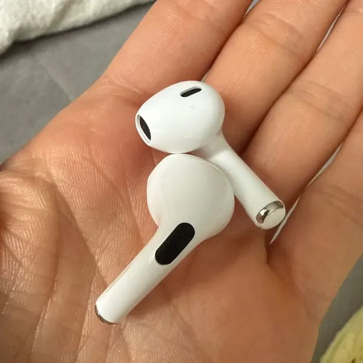
Топ!
Маленькі, легкі, у вусі їх майже не відчуваєш. Повний діапазон, і бас насправді досить хороший. Для своєї ціни просто чудово.
Дуже легко підключити до смартфона, якість значно вища за ціну. Посилка приїхала кур'єром приблизно за 10 днів.
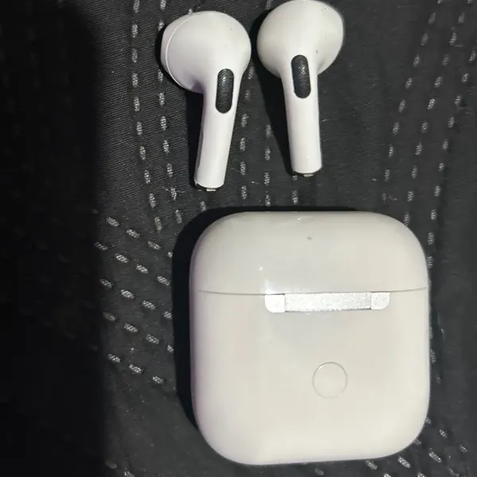
Добра якість за свої гроші і дуже хороший звук.
За 165 гривень дива не буває. Ось межі, про які краще дізнатися зараз, а не з посилки.
У продавця намальовані рендери з широким кейсом. Насправді приходить майже квадратний, як на фото покупців вище. Тому наші фото на цій сторінці зроблені на основі фото покупців, а не рендерів.
Без амбушюр вухо не закривається, тож гул метро стане тихішим, але не зникне. Одні покупці чують ефект, інші ні.
Удома вас почують, а на вулиці співрозмовник скаржитиметься на звук «як з-під води». Для довгих робочих дзвінків ці навушники не найкращий вибір.
Потім треба 15-20 хвилин у кейсі. Буває, що один навушник сідає раніше за другий.
Комусь сідають ідеально, а в когось випадають, особливо під час бігу. Для спорту беріть комплект з ремінцем.
Форма схожа, але чип свій. На iPhone вони працюють як звичайна Bluetooth-гарнітура, без просторового звуку і без пошуку через «Локатор».
Навушники бездротові Air Pro 6, 1 пара
16469грн
без знижки 933,70
для нових покупців
Це вітальна ціна AliExpress для нових покупців, одна пара на акаунт. Якщо ви вже замовляли на AliExpress, ціна буде вищою, точну покаже сторінка товару після входу.
Так. Це звичайна Bluetooth-гарнітура: вона працює з будь-яким Android, iPhone, iPad, ноутбуком чи телевізором з Bluetooth. Окремий застосунок не потрібен.
Ні. Форма схожа, але це окрема бюджетна модель A6pro з власним чипом. Фірмових функцій Apple на кшталт просторового звуку чи пошуку через «Локатор» тут немає.
Так. За інструкцією кожен навушник може працювати окремо, наприклад поки другий заряджається в кейсі.
Якщо навушники вам потрібні для бігу чи спортзалу або звичайні вкладиші у вас часто випадають, беріть Pro 6 з ремінцем. Якщо ні, найдешевший комплект A: навушники в усіх комплектах однакові.
За даними AliExpress 7-20 днів зі складу в Китаї. Доставка безкоштовна і з відстеженням, в Україні посилку привозить Нова пошта або Meest.
164,69 грн це вітальна ціна AliExpress для нових покупців, одна пара на акаунт. Для тих, хто вже купував, ціна буде вищою. Але й без знижки це бюджетні навушники: для дороги, спортзалу чи як запасна пара, а не на заміну дорогій гарнітурі.